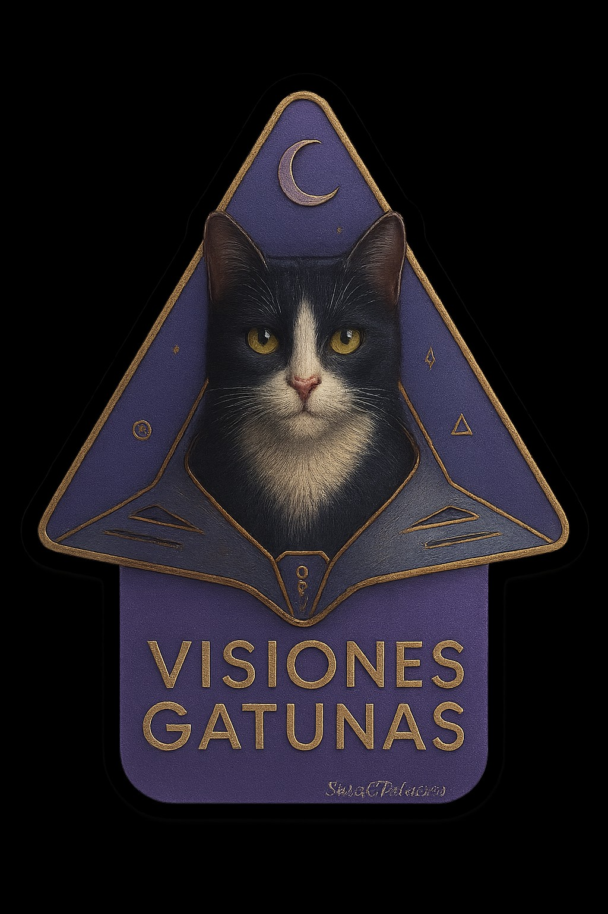

El gato guardián
Cada carta presenta un gato diferente que custodia una energía, una historia y un aprendizaje.

Donde la sabiduría felina encuentra la voz de las flores
Un universo oracular nacido para escuchar los mensajes sutiles del alma, despertar la intuición y descubrir la magia que habita en cada encuentro.
Descubrir el oráculoVisiones Gatunas reúne espiritualidad, naturaleza y simbolismo felino. Cada gato se convierte en guardián de un mensaje y cada flor abre una puerta hacia una enseñanza diferente.
Un oráculo de 77 cartas creado para acompañar procesos de transformación, autoconocimiento y conexión intuitiva.
Cada carta presenta un gato diferente que custodia una energía, una historia y un aprendizaje.
Su lenguaje simbólico revela emociones, caminos y mensajes que a menudo permanecen ocultos.
Una invitación a detenerse, escuchar la intuición y observar la vida desde una mirada más profunda.
Tarotista, vidente, terapeuta y creadora de Visiones Gatunas. Un proyecto nacido del amor por los gatos, la espiritualidad, las flores y los lenguajes secretos del universo.